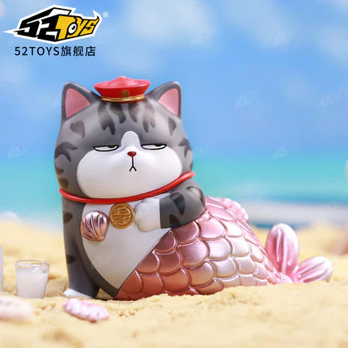

Stuff
I like cats! Although I personally don't have any cats, my neighbor does and I consider the cats (half)mine. Also, I take care of them reguarly because my neighbors travel a lot betweeen Italy and their place of residence here.

Yasmeen(left) is the sister. She's a really sweet and sticky kitty. V is the chonki boy. He's called v because there's a white V shaped patch of fur on the back of his neck, but now that he's fat it's more of a half O(maybe we should start calling him U instead)
.jpeg)
.jpeg)
if i were ever to get a cat, I'd probably want to rescue a cat. I don't really have a preference for species, but maine coon, siamese, persian would all be really cool.
I'd also like a needy cat, the kind that wouldn't mind to be squished and loved and cuddled all day.
I also have a list ready for future cats depending on their fur pattern: black: Wifi, garfield: garfield or mango, gray: Oreo, yello/white, QAQ egg yolk, brown mixiu, calico doriyaki
honorable mention:
Moby, my friend's orange kitty. He's a silly cat and is kind of chubby. Named after the infamous Moby D***, he reigns the open seas with his unsinkable body of a boat.


There's also a lot of fictional kitties I like...
wuhuang
garfield
in china there's this trend called 'silence books' and they're basciall magnet books so you can move characters around and play-pretend. I'm trying to do one of these for Wuhuang this summer
*need to upload photo blind box
.png)